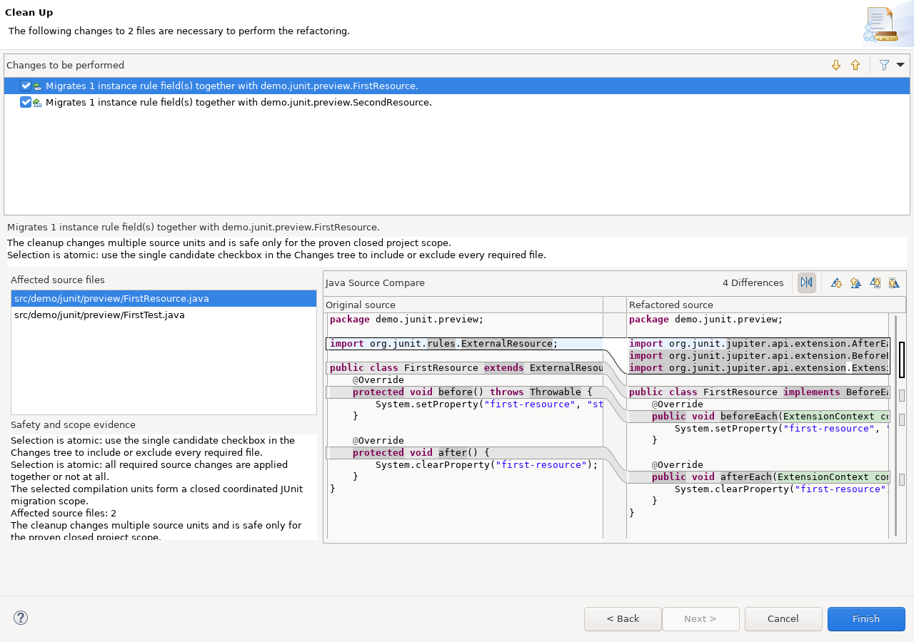

Open Java > Code Style > Clean Up, edit a cleanup profile, and select JUnit Migration (Sandbox).
JUnit migration is intentionally not offered under Java > Editor > Save Actions. Its project-wide scope discovery, explicit preview, coordinated changes, and runtime verification are not safe as an implicit per-save editor action.
Best-effort mode is never enabled implicitly by a migration preset. Every preset selects a strict, complete option state; Best Effort remains a separate explicit policy choice.
The cleanup requires resolvable JUnit types and only rewrites patterns for which a supported Jupiter equivalent has been implemented. Coordinated rules and fixtures additionally require the complete source lifecycle scope.
With the pinned optional patched JDT UI host, a coordinated fixture migration and all of its proven
@Rule or @ClassRule consumers appear as one candidate-level checkbox leaf.
Selecting the candidate shows every required Java file and the Selection is atomic explanation;
the contained file changes and edit groups cannot be toggled separately.

The screenshot and candidate-level selection guarantee require the pinned optional patched JDT UI product. Stock or otherwise unpatched Eclipse installations can load the Sandbox cleanup but do not provide this host-side atomicity contract. Do not infer safe partial-selection prevention from a stock preview.
For the distinction between configuration preview, execution preview, independent local deselection, and coordinated atomic migrations, see Cleanup preview model.
Sandbox JUnit migration gap.@todo marker using its reason code and remediation.Best-effort planning may retain independently proven candidates while rejecting other candidates. It does not make the files inside one retained coordinated candidate partially selectable.
See Best-effort migration and manual completion for marker examples and supported diagnostics.
The configuration image is generated from a real Eclipse workbench by
SandboxHelpScreenshotsSWTBotTest. The atomic candidate image is generated by
SandboxAtomicPreviewPatchedJdtSWTBotTest in the separate patched-product workflow.
Regenerate the applicable image after UI changes rather than editing either PNG manually.
The screenshot builds are integration tests: they must load the cleanup extension, open the real profile or preview dialog, exercise the documented selection behavior, and package the Help bundle in the product reactor.